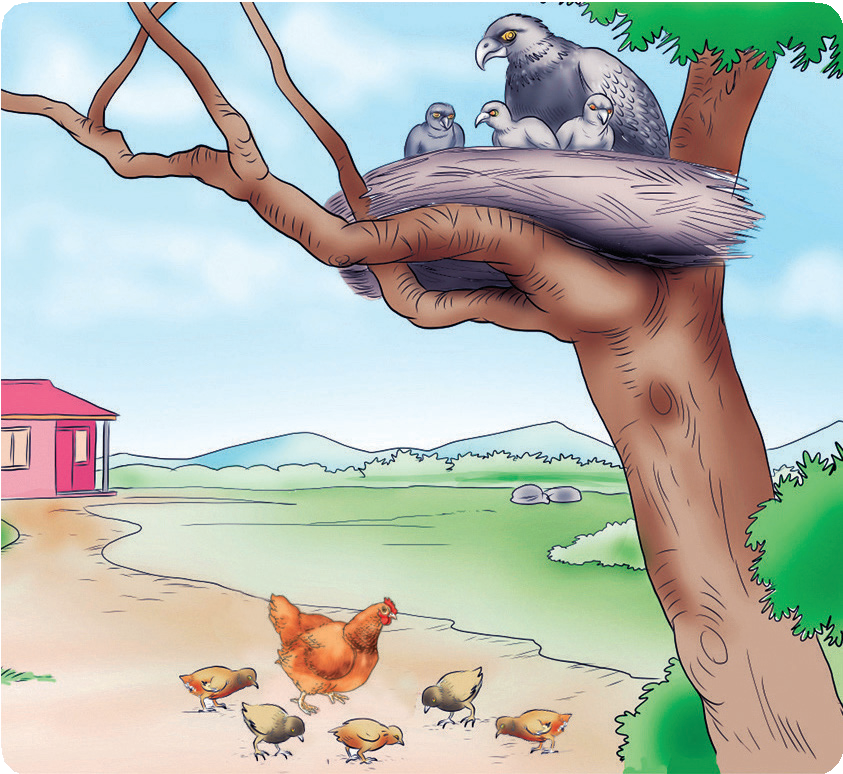

Ufahamu
Soma hadithi ifuatayo, kisha jibu maswali yanayofuata.
Urafiki wa uongo

Hapo zamani, kulikuwa na Kuku na Mwewe. Kuku na Mwewe walikuwa marafiki sana. Kuku alikuwa na watoto watano na Mwewe alikuwa na watoto watatu. Wote walikuwa wanapenda kucheza pamoja. Siku moja kulitokea njaa, Mwewe akamwambia Kuku waende porini kuwinda. Kuku alikubali na waliwaacha watoto na kuelekea porini. Watoto wa mwewe walikaa juu ya mti na wa kuku chini ya mti.